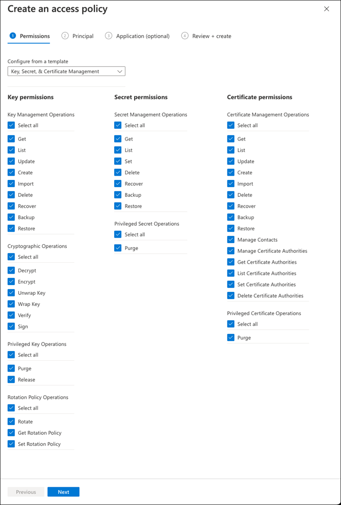

릴리스 정보
릴리스 정보
Azure Key Vault를 사용하여 키를 관리합니다
 변경 제안
변경 제안
을 사용할 수 있습니다 "Azure 키 저장소(AKV)" Azure로 배포된 응용 프로그램에서 ONTAP 암호화 키를 보호합니다.
AKV를 사용하여 보호할 수 있습니다 "NVE(NetApp Volume Encryption) 키" 데이터 SVM에만 해당.
AKV를 사용한 키 관리는 CLI 또는 ONTAP REST API를 사용하여 활성화할 수 있습니다.
AKV를 사용할 때는 기본적으로 데이터 SVM LIF가 클라우드 키 관리 엔드포인트와 통신하는 데 사용됩니다. 노드 관리 네트워크는 클라우드 공급자의 인증 서비스(login.microsoftonline.com 통신하는 데 사용됩니다. 클러스터 네트워크가 올바르게 구성되지 않은 경우 클러스터는 키 관리 서비스를 제대로 사용하지 않습니다.
-
Cloud Volumes ONTAP에서 버전 9.10.1 이상을 실행해야 합니다
-
설치된 볼륨 암호화(VE) 라이센스(NetApp 볼륨 암호화 라이센스는 NetApp Support에 등록된 각 Cloud Volumes ONTAP 시스템에 자동으로 설치됨)
-
멀티 테넌트 암호화 키 관리(MT_EK_MGMT) 라이센스가 있어야 합니다
-
클러스터 또는 SVM 관리자여야 합니다
-
Active Azure 구독
-
AKV는 데이터 SVM에서만 구성할 수 있습니다
-
NAE는 AKV로 사용할 수 없습니다. NAE는 외부 지원 KMIP 서버가 필요합니다.
구성 프로세스
이 단계에서는 Azure에 Cloud Volumes ONTAP 구성을 등록하는 방법과 Azure 키 저장소 및 키를 생성하는 방법을 설명합니다. 이 단계를 이미 완료한 경우, 특히 에서 올바른 구성 설정이 있는지 확인하십시오 Azure Key Vault를 작성합니다을 클릭한 다음 로 진행합니다 Cloud Volumes ONTAP 구성.
-
먼저 Cloud Volumes ONTAP가 Azure 키 저장소에 액세스하기 위해 사용할 Azure 구독에 응용 프로그램을 등록해야 합니다. Azure 포털에서 앱 등록 을 선택합니다.
-
새 등록** 을 선택합니다.
-
응용 프로그램의 이름을 제공하고 지원되는 응용 프로그램 유형을 선택합니다. Azure Key Vault 사용에 대한 기본 단일 테넌트 접미사 Register (등록**)을 선택합니다.
-
Azure 개요 창에서 등록한 애플리케이션을 선택합니다. 애플리케이션(클라이언트) ID 및 디렉토리(테넌트) ID 를 안전한 위치에 복사합니다. 등록 프로세스 후반부에 필요합니다.
-
Azure 키 저장소 앱 등록을 위한 Azure 포털에서 인증서 및 비밀 창을 선택합니다.
-
새 클라이언트 암호** 를 선택합니다. 클라이언트 비밀에 의미 있는 이름을 입력합니다. NetApp에서는 24개월의 만료 기간을 권장합니다. 단, 특정 클라우드 거버넌스 정책에는 다른 설정이 필요할 수 있습니다.
-
클라이언트 암호를 만들려면 추가 를 클릭합니다. 값** 열에 나열된 암호 문자열을 복사하여 에서 나중에 사용할 수 있도록 안전한 위치에 저장합니다 Cloud Volumes ONTAP 구성. 페이지를 벗어나 이동하면 암호 값이 다시 표시되지 않습니다.
-
기존 Azure 키 저장소가 있는 경우 Cloud Volumes ONTAP 구성에 연결할 수 있지만 이 프로세스의 설정에 액세스 정책을 적용해야 합니다.
-
Azure 포털에서 Key Vaults 섹션으로 이동합니다.
-
+Create를 클릭하고 리소스 그룹, 지역 및 가격 책정 계층을 포함한 필수 정보를 입력합니다. 또한, 삭제된 볼트를 보관할 일 수를 입력하고 키 볼트에서 삭제 보호 활성화를 선택합니다.
-
액세스 정책을 선택하려면 다음 을 선택합니다.
-
다음 옵션을 선택합니다.
-
Access configuration 아래에서 Vault access policy를 선택합니다.
-
리소스 액세스 아래에서 볼륨 암호화를 위한 Azure 디스크 암호화 를 선택합니다.
-
-
액세스 정책을 추가하려면 + Create 를 선택합니다.
-
템플릿에서 구성 아래에서 드롭다운 메뉴를 클릭한 다음 키, 암호 및 인증서 관리** 템플릿을 선택합니다.
-
각 드롭다운 권한 메뉴(키, 암호, 인증서)를 선택한 다음 메뉴 목록 상단의 모두 선택 을 선택하여 사용 가능한 모든 권한을 선택합니다. 다음과 같은 항목이 있어야 합니다.
-
키 권한:20 선택됨
-
비밀 권한:8 선택됨
-
인증서 권한:16 선택됨

-
-
에서 만든 기본 Azure 등록 응용 프로그램을 선택하려면 다음 을 클릭합니다 Azure 애플리케이션 등록. 다음** 을 선택합니다.

정책당 하나의 보안 주기만 할당할 수 있습니다. 
-
검토 후 작성 이 나타날 때까지 다음 을 두 번 클릭합니다. 그런 다음 만들기 를 클릭합니다.
-
다음 을 선택하여 네트워킹 옵션으로 진행합니다.
-
적절한 네트워크 액세스 방법을 선택하거나 모든 네트워크 및 검토 + 작성을 선택하여 키 볼트를 작성합니다. (네트워크 액세스 방법은 거버넌스 정책 또는 회사 클라우드 보안 팀에서 규정할 수 있습니다.)
-
키 볼트 URI 기록: 작성한 키 볼트에서 개요 메뉴로 이동하여 오른쪽 컬럼에서 볼트 URI를 복사합니다. 이 작업은 나중에 수행해야 합니다.
-
Cloud Volumes ONTAP에 대해 만든 키 저장소 메뉴에서 키 옵션으로 이동합니다.
-
새 키를 만들려면 Generate/import 를 선택합니다.
-
기본 옵션을 Generate 로 설정된 상태로 둡니다.
-
다음 정보를 제공합니다.
-
암호화 키 이름입니다
-
키 유형: RSA
-
RSA 키 크기: 2048
-
활성화됨: 예
-
-
암호화 키를 만들려면 만들기 를 선택합니다.
-
키 메뉴로 돌아가서 방금 만든 키를 선택합니다.
-
키 속성을 보려면 현재 버전 아래에서 키 ID를 선택합니다.
-
키 식별자 필드를 찾습니다. 16진수 문자열을 포함하지만 포함되지 않는 최대 URI를 복사합니다.
-
이 프로세스는 HA Cloud Volumes ONTAP 작업 환경을 위해 Azure 키 저장소를 구성하는 경우에만 필요합니다.
-
Azure 포털에서 가상 네트워크로 이동합니다.
-
Cloud Volumes ONTAP 작업 환경을 배포한 가상 네트워크를 선택하고 페이지 왼쪽의 Subnets 메뉴를 선택합니다.
-
목록에서 Cloud Volumes ONTAP 구축의 서브넷 이름을 선택합니다.
-
서비스 엔드포인트 제목으로 이동합니다. 드롭다운 메뉴에서 다음을 선택합니다.
-
NET Framework 클래스 라이브러리 Control.OnKeyEventArgs 클래스 참고: 이 속성은 .NET Framework 버전 2.0
-
Microsoft.KeyVault
-
Microsoft.Storage(선택 사항)

-
-
설정을 캡처하려면 저장을 선택합니다.
-
기본 SSH 클라이언트를 사용하여 클러스터 관리 LIF에 연결합니다.
-
ONTAP에서 고급 권한 모드로 들어갑니다.
set advanced -con off -
원하는 데이터 SVM을 식별하고 DNS 구성 'vserver services name-service dns show'를 확인합니다
-
원하는 데이터 SVM에 대한 DNS 항목이 있고 Azure DNS에 대한 항목이 포함된 경우 별도의 조치가 필요하지 않습니다. 그렇지 않으면 Azure DNS, 프라이빗 DNS 또는 사내 서버를 가리키는 데이터 SVM용 DNS 서버 항목을 추가합니다. 클러스터 관리 SVM의 항목과 일치해야 합니다. 'vserver services name-service dns create-vserver_SVM_name_-domain_domain_-name-servers_ip_address_'
-
SVM을 위해 DNS 서비스가 생성되었는지 확인합니다. 'vserver services name-service dns show'
-
-
응용 프로그램 등록 후 저장된 클라이언트 ID 및 테넌트 ID를 사용하여 Azure Key Vault를 활성화합니다.
security key-manager external azure enable -vserver SVM_name -client-id Azure_client_ID -tenant-id Azure_tenant_ID -name key_vault_URI -key-id full_key_URI
를 클릭합니다 _full_key_URI값은 을 사용해야 합니다<https:// <key vault host name>/keys/<key label>형식. -
Azure Key Vault가 활성화되면 를 입력합니다
client secret value메시지가 표시되면 -
Key Manager의 상태를 확인한다. '보안 Key-manager external Azure check' 출력 내용은 다음과 같다.
::*> security key-manager external azure check Vserver: data_svm_name Node: akvlab01-01 Category: service_reachability Status: OK Category: ekmip_server Status: OK Category: kms_wrapped_key_status Status: UNKNOWN Details: No volumes created yet for the vserver. Wrapped KEK status will be available after creating encrypted volumes. 3 entries were displayed.를 누릅니다
service_reachability상태가 아닙니다 `OK`SVM은 필요한 모든 연결 및 사용 권한으로 Azure Key Vault 서비스에 연결할 수 없습니다. Azure 네트워크 정책 및 라우팅으로 인해 프라이빗 VNET가 Azure KeyVault Public 엔드포인트에 도달하지 못하도록 차단하지 않는지 확인합니다. 이러한 경우, VNET 내에서 키 볼트에 액세스하기 위해 Azure 프라이빗 끝점을 사용하는 것이 좋습니다. 또한 종점의 전용 IP 주소를 확인하기 위해 SVM에 정적 호스트 항목을 추가해야 할 수도 있습니다.를 클릭합니다
kms_wrapped_key_status보고합니다UNKNOWN초기 구성 시 상태가 로 변경됩니다OK첫 번째 볼륨이 암호화된 후 -
선택 사항: NVE의 기능을 확인하기 위한 테스트 볼륨을 생성합니다.
'vol create-vserver_SVM_name_-volume_volume_name_-aggregate_aggr_-size_size_-state online-policy default'
올바르게 구성된 경우 Cloud Volumes ONTAP는 자동으로 볼륨을 생성하고 볼륨 암호화를 활성화합니다.
-
볼륨이 올바르게 생성되고 암호화되었는지 확인합니다. 이 경우 암호화된 매개 변수는 true로 표시됩니다. 'vol show-vserver_SVM_name_-fields is-encrypted'